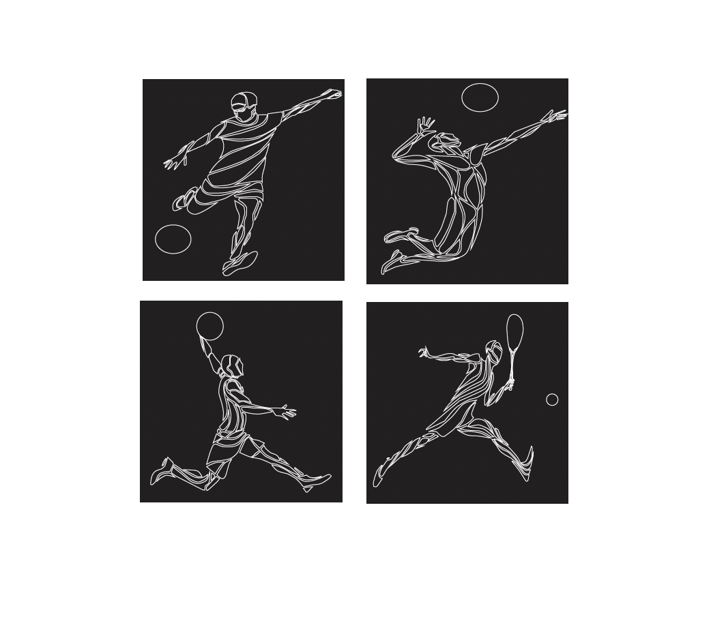

Olympic Pictograms
A set of pictograms to represent various events in the Olympic Games.
For this project, we were assigned to create a set of at least 4 pictograms that represent various events in the Olympic Games. They should be clear and unified and the final deliverable was to create two versions—a positve and negative.
Choosing Sports
The first phase was to choose sports from the official Olympic Games list (either Winter OR Summer) and begin to explore possiblities through sketching. The sports that I chose were from the Summer Olympics list ( basketball, football, tennis, and volleyball).
Sketching
These are some of the sketches that I had in mind for my pictograms The concept that I chose was based on inspiration from the human muscle anatomy. I thought that it would be best to showcase each sport like that in a abstract way.
Finalizing Pictograms
The last phase was to refin and finalize our pictograms.

Final
These are the final pictograms with mockups.